Galeria
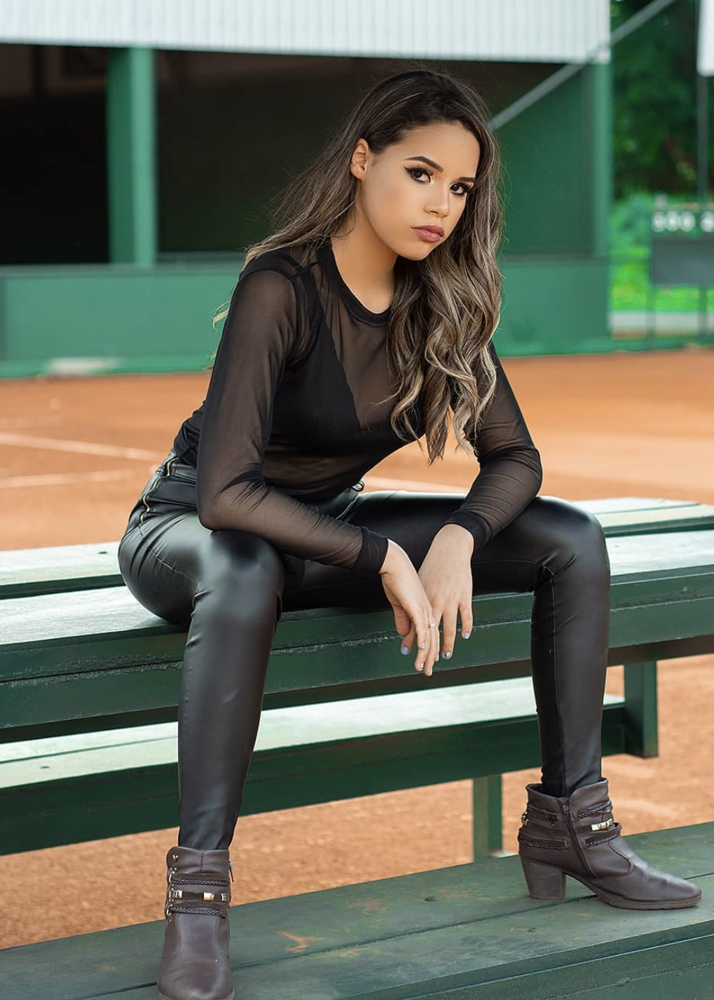
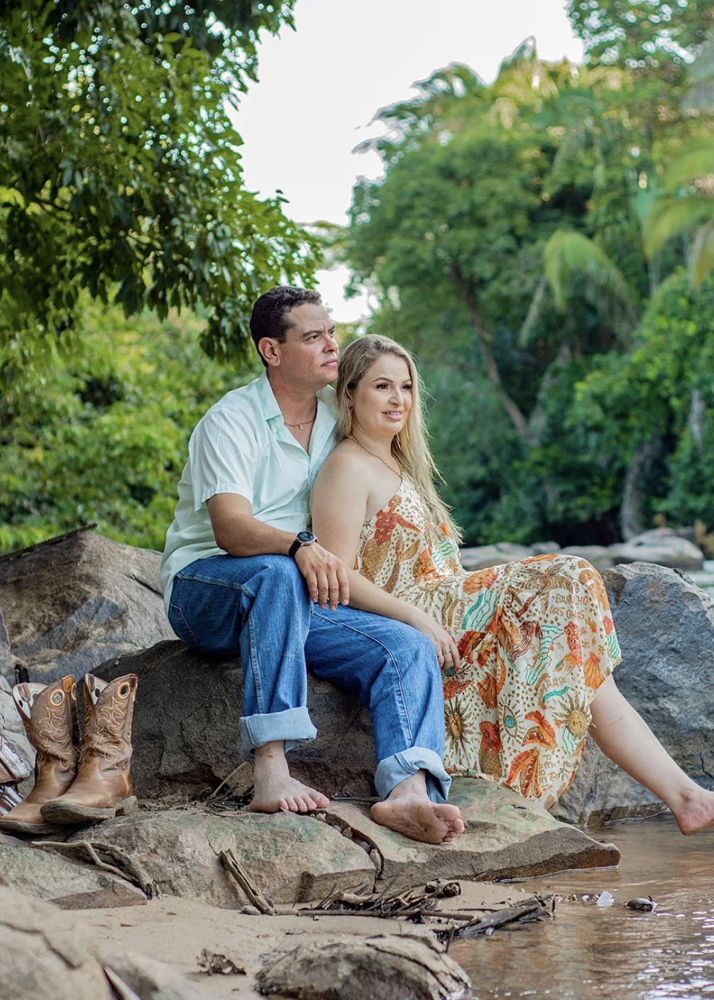
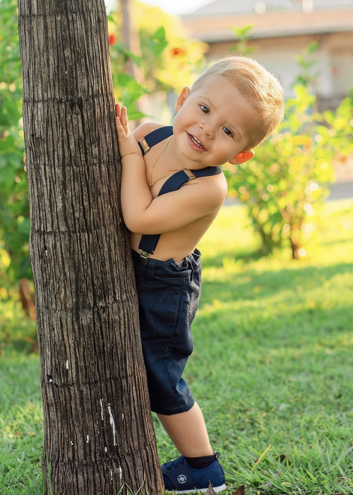
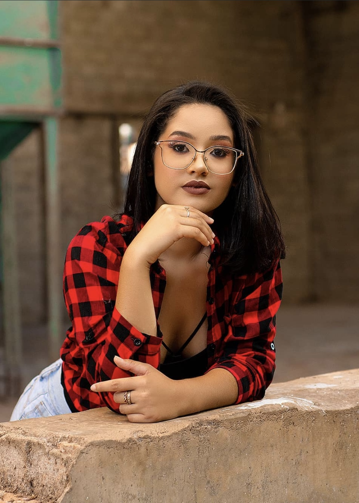
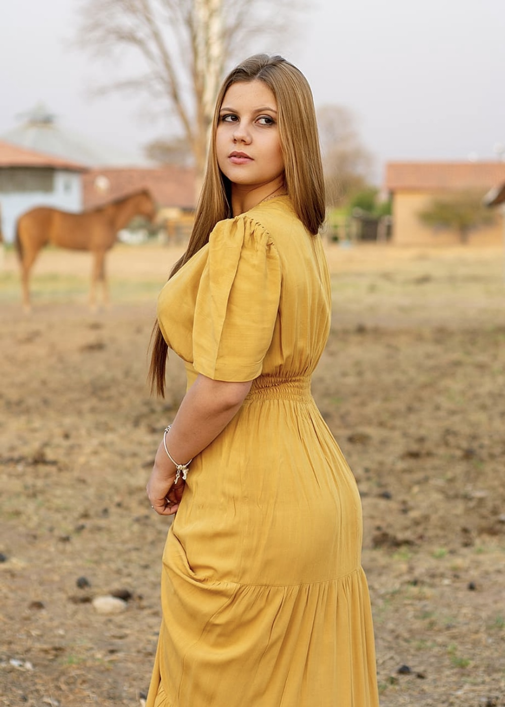
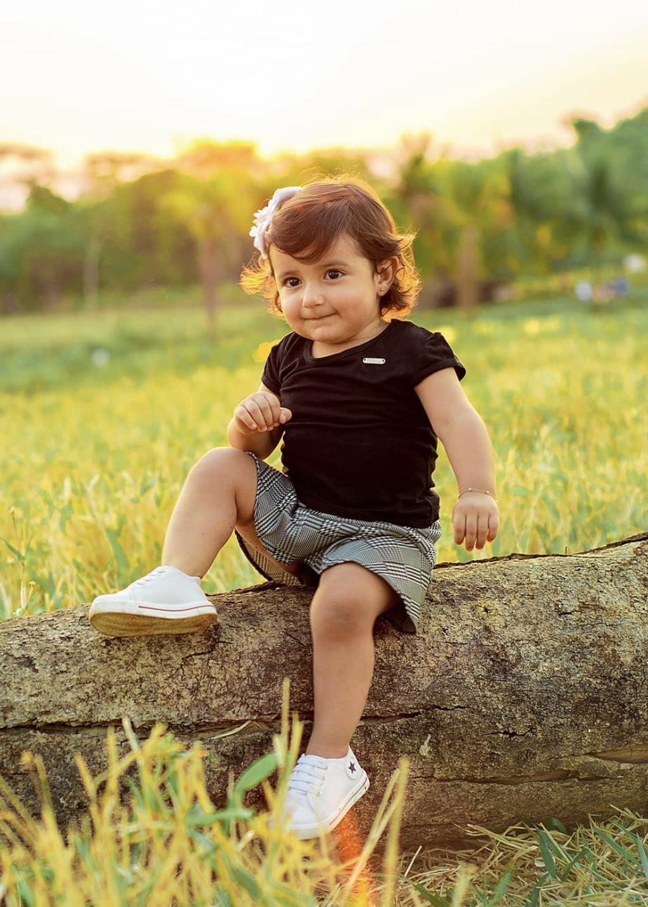
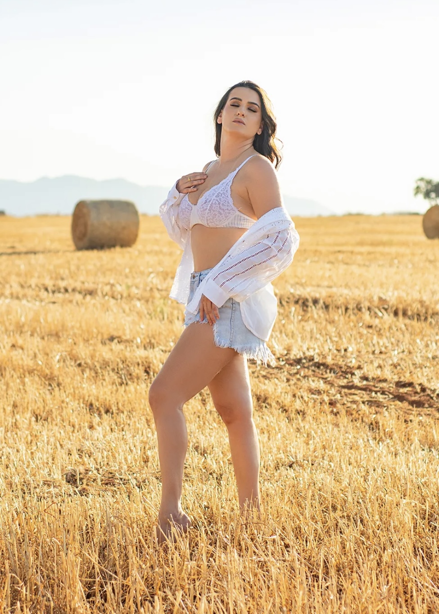
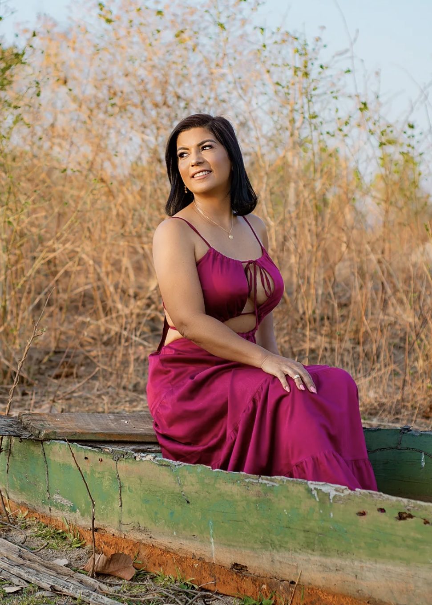
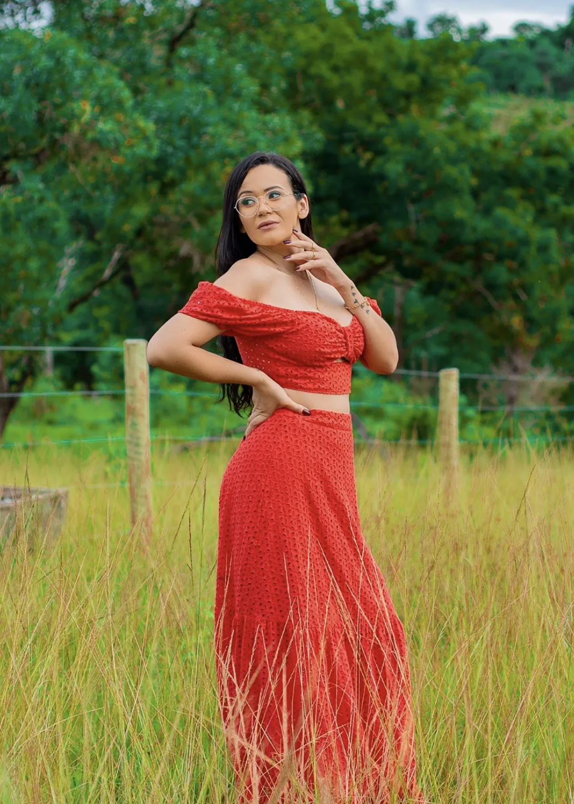
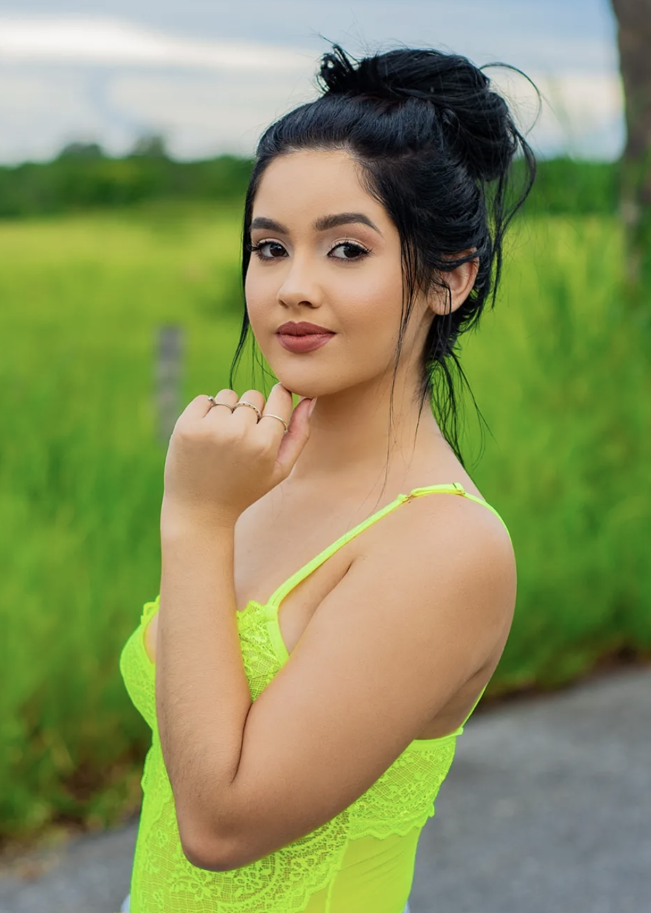
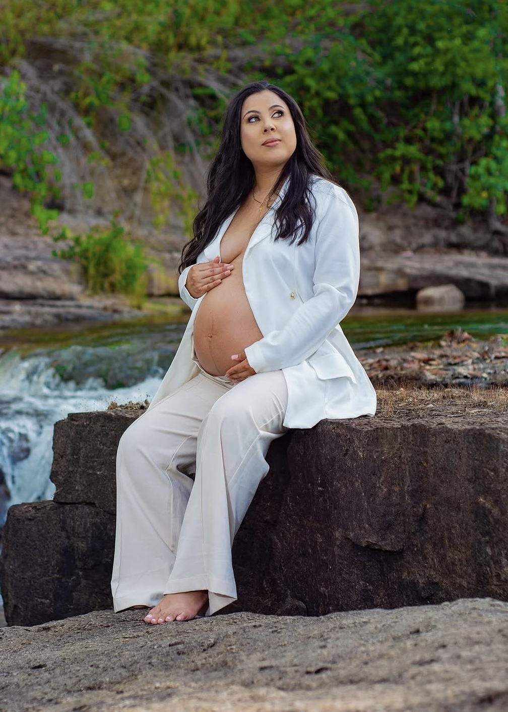
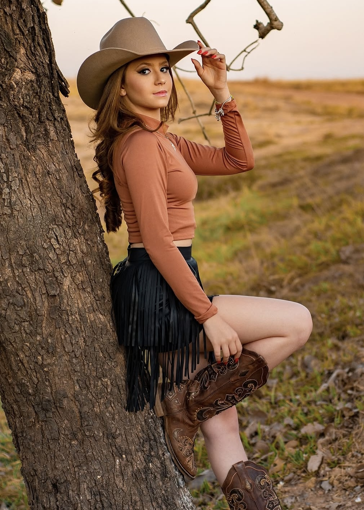
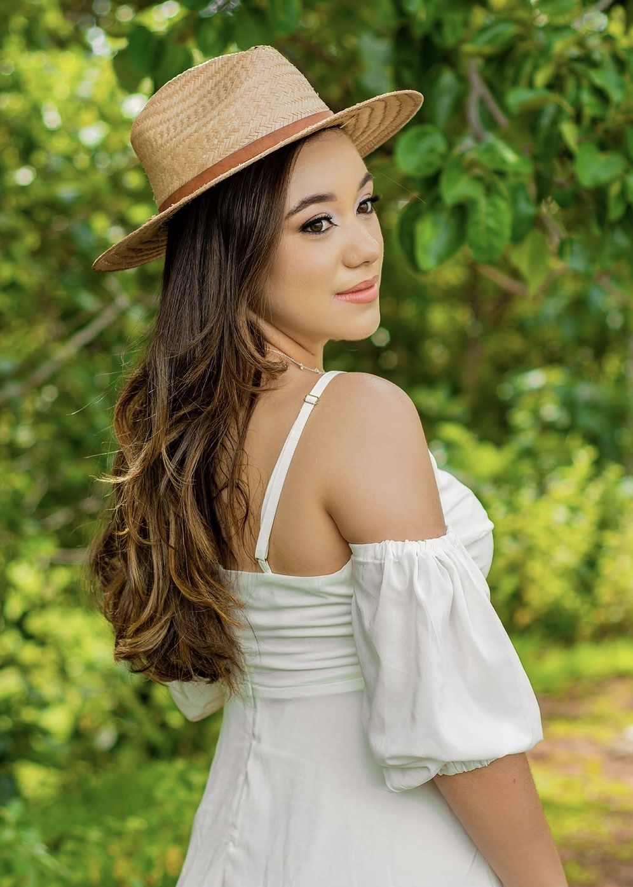
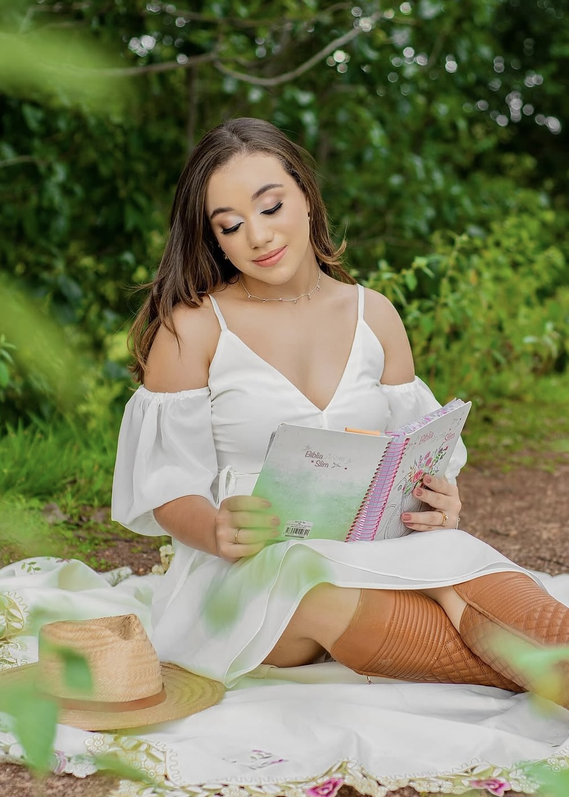
×

Meu nome é Marcos Costa, nascido e criado no interior de Goiás, e por muito tempo nunca imaginei que me tornaria fotógrafo profissional. Foi em 2016 que descobri minha paixão pela fotografia, ao longo dessa jornada explorei diferentes estilos e caminhos até encontrar a essência do meu trabalho. Hoje defino o que faço de uma forma simples, sou um contador de histórias, mais do que registrar imagens, eternizo memórias. Cada fotografia é construída com sensibilidade, emoção e conexão, transformando momentos únicos em lembranças que poderão ser revividas por toda a vida. Meu propósito é fotografar os momentos mais importantes da sua história para que eles permaneçam vivos, não apenas no seu coração, mas também em imagens que atravessam o tempo.
Cobertura completa do grande dia.
Casais, gestantes, família e lifestyle.
Corporativos e sociais.













